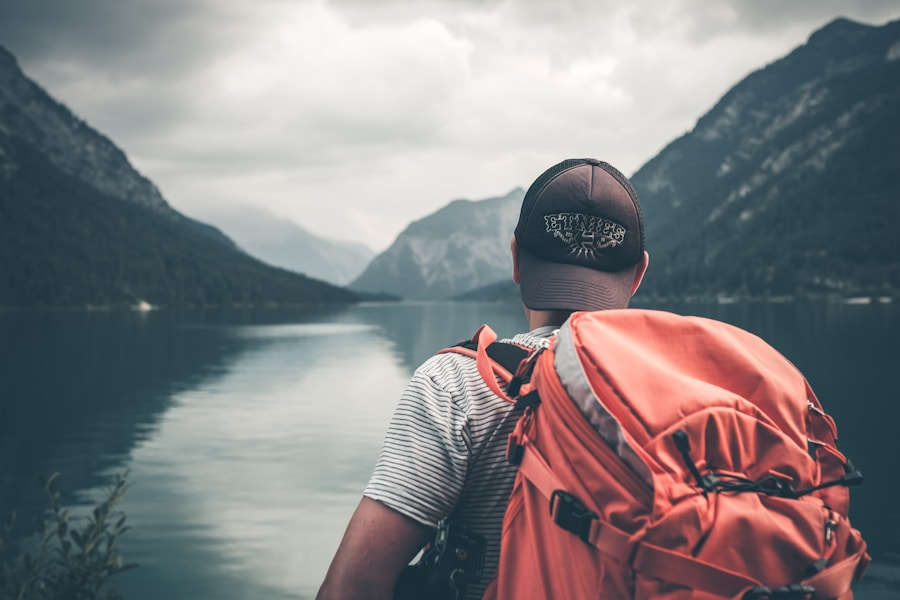

Luoghi silenziosi, inquadrati lentamente
Workation in capo al mondo — Isole Faroe e Islanda, tre mesi ciascuna, macchina fotografica sempre a portata di mano.
Workation & Vita a distanza
Il principio del workation è semplice: lavorare da un posto che ispira, e lasciare che quel posto si infiltri nel quotidiano. Ho trascorso tre mesi in smart working alle Isole Faroe e tre mesi in Islanda in inverno — non da turista, ma da residente che si trova ad avere una macchina fotografica e una scadenza.
Vivere in questi posti invece di visitarli cambia tutto. Si fotografa l'ordinario — la luce del mattino su un fiordo, la stessa strada sotto tre condizioni meteorologiche diverse, una foca che vi osserva dalla riva con perfetta indifferenza. A poco a poco, lo straordinario diventa familiare, e il familiare vale la pena di essere fotografato.


Islanda — Un soggiorno singolare
Il soggiorno in Islanda era di natura diversa rispetto alle Faroe — più vicino a un ritiro spirituale. Un chalet isolato ma confortevole, lontano da qualsiasi villaggio, con nient'altro all'orizzonte che campi di lava, vapore geotermico e il cielo notturno. Lavorare durante le rare ore di luce, passeggiare al crepuscolo, fotografare all'alba e al tramonto di un giorno molto breve.
Il silenzio lì ha una texture. Si smette sorprendentemente in fretta di rimpiangere la città.
Catravel / Chatourisme
Un progetto che prende forma lentamente in sordina: una guida di viaggio per gli amanti dei gatti. Catravel in inglese, Chatourisme in francese. Un libro sulle destinazioni, i caffè, i rifugi, le isole note per i loro gatti, e il modo particolare in cui i felini abitano le città e i paesaggi. Più dettagli quando sarà pronto.